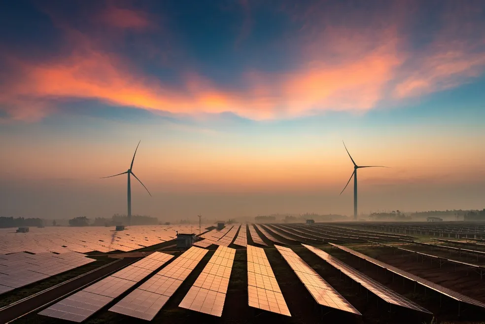
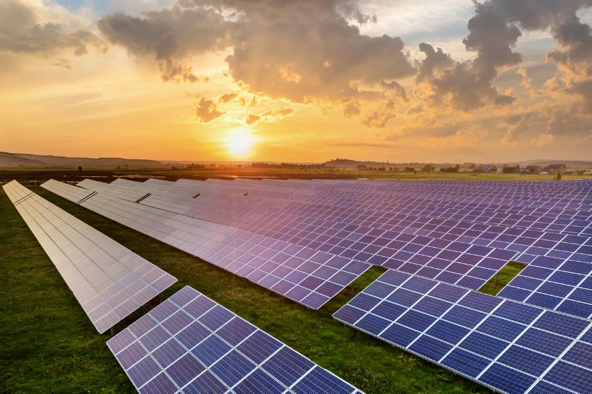

O Cenário da Agroenergia no Brasil
Elaborado pela Empresa Brasileira de Pesquisa Agropecuária (Embrapa) e pelo Ministério da Agricultura, Pecuária e Abastecimento (Mapa), o Plano Nacional de Agroenergia traça as diretrizes para as ações públicas e privadas de geração de conhecimento e tecnologia para a produção de energia a partir de produtos agrícolas.
O Brasil reúne as maiores vantagens comparativas para liderar a agricultura de energia. A primeira é a possibilidade de incorporação de áreas sem competição com a produção de alimentos e com impactos ambientais socialmente aceitos. O segundo aspecto essencial é a viabilidade de múltiplos cultivos dentro do mesmo ano-calendário.

Fatores que Impulsionam o Desenvolvimento
As forças propulsoras por trás da transição para uma nova matriz energética baseada na biomassa.
O aumento da preocupação com as mudanças climáticas globais demandará políticas rígidas para reduzir a poluição. A concentração de CO2 atmosférico teve um aumento de 31% nos últimos 250 anos, tornando urgente a transição para fontes limpas.
Reconhecimento da biomassa para efetuar a transição e substituir o petróleo como matéria-prima, tanto em seu uso como combustível líquido quanto como insumo estratégico para a indústria química moderna.
Os países em desenvolvimento demandarão uma quantidade imensa de energia nova nos próximos 40 anos. É inaceitável que essa demanda venha de fontes fósseis devido ao alto impacto ambiental, esgotamento de reservas e custos crescentes.
Os custos ambientais serão gradativamente incorporados ao preço dos combustíveis fósseis por meio de tributos punitivos. Além disso, as disputas geopolíticas e bélicas geram instabilidade no fornecimento do petróleo, tornando a produção descentralizada muito mais atraente.

Estratégia e Prioridades para o Etanol
A atuação do plano ocorre de forma integrada com os princípios do Mecanismo de Desenvolvimento Limpo (MDL), focando em cadeias como etanol, biodiesel, biogás e resíduos agropecuários. Para o setor sucroalcooleiro, destacam-se as seguintes prioridades:
- Maximização de Potencial: Eliminar fatores restritivos para incrementar a produtividade da cana, o teor de sacarose e o rendimento industrial.
- Sustentabilidade Operacional: Desenvolver tecnologias poupadoras de insumos e que eliminem ou mitiguem os impactos ambientais locais.
- Aproveitamento Integral: Utilizar toda a planta da cana-de-açúcar (bagaço, palha) para geração otimizada de bioenergia.
- Alcoolquímica e Novos Processos: Criar novos produtos de alto valor agregado baseados na transformação verde da biomassa.
Programas Estratégicos Nacionais
Programa Biodiesel
Introduziu o biodiesel na matriz energética com metas progressivas de adição ao diesel comum. Conta com incentivos fiscais e linhas de crédito facilitadas para a agricultura familiar (mamona, babaçu, dendê, girassol).
Proinfa
Criado para diversificar a matriz elétrica nacional através da inserção competitiva de energias eólica, Pequenas Centrais Hidrelétricas (PCHs) e biomassa, impulsionando o setor sucroalcooleiro.
Proger
Focado na vanguarda tecnológica. O programa destina recursos robustos para Pesquisa & Desenvolvimento em unidades industriais de biodiesel, etanol de segunda geração e novas fontes limpas de energia.
Interação com o Leitor
O que você pensa sobre o futuro da energia renovável no agronegócio?
Escolha a opção que melhor representa sua visão sobre a sinergia entre campo e inovação tecnológica:
Espaço de Discussão Limpa
Faça Parte da Mudança Verde
“Venha conhecer melhor como a energia sustentável pode transformar o nosso planeta e a sua rotina”
A integração da inteligência artificial com a biomassa da cana vai revolucionar o rendimento por hectare no Centro-Sul.
O Proinfa é fundamental, mas precisamos simplificar os financiamentos para que o pequeno produtor também participe.